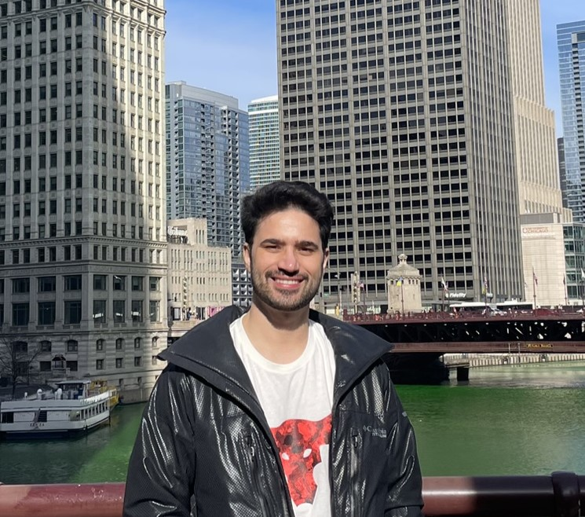

|
Abrar Majeedi I'm a PhD student at the University of Wisconsin-Madison, working on computer vision and its application in Healthcare I am fortunate to be advised by Prof. Yin Li. I have previously done research internships at Amazon, Microsoft and Dell EMC. |
 |
{kind=link}
ResearchI'm interested in computer vision and deep learning. I have mostly worked on video machine learning and lately I have been working on time series data. Some papers are highlighted. |

|
CAT3D: Create Anything in 3D with Multi-View Diffusion Models
Ruiqi Gao*, Aleksander Holynski*, Philipp Henzler, Arthur Brussee, Ricardo Martin Brualla, Pratul P. Srinivasan, Jonathan T. Barron, Ben Poole* arXiv, 2024 project page / arXiv A single model built around diffusion and NeRF that does text-to-3D, image-to-3D, and few-view reconstruction, trains in 1 minute, and renders at 60FPS in a browser. |

|
Binary Opacity Grids: Capturing Fine Geometric Detail for Mesh-Based View Synthesis
Christian Reiser, Stephan J. Garbin, Pratul Srinivasan, Dor Verbin, Richard Szeliski, Ben Mildenhall, Jonathan T. Barron, Peter Hedman*, Andreas Geiger* SIGGRAPH, 2024 project page / video / arXiv Applying anti-aliasing to a discrete opacity grid lets you render a hard representation into a soft image, and this enables highly-detailed mesh recovery. |
|
Website template from Jon Barron |